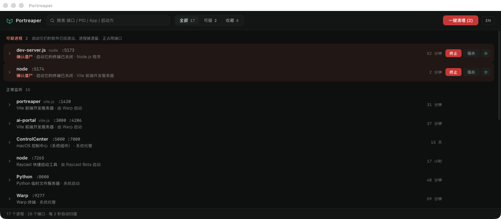

僵尸识别
置信度分层（confirmed / likely / possible）综合孤儿、孤儿链、会话失效等信号判定。launchd / Homebrew 后台服务自动豁免 —— 不误报正在服务的进程。
收割端口上的僵尸进程。
找出谁在占用端口，看清是谁拉起的，然后一键终结那些父进程已死、却还赖在端口上的孤儿 dev-server。

| 端口 | 类型 | App | 启动者 | PID | 操作 |
|---|---|---|---|---|---|
| :5173 | 脚本 |
vite
my-app · node
|
launchd | 8821 · 1 | Kill |
| :3000 | 脚本 |
next dev
web · node
|
iTerm → zsh → npm | 7740 · 7702 | Kill |
| :5432 | APP |
Postgres.app ★
postgres
|
launchd | 612 · 1 | Kill |
| :8080 | CLI |
cargo run
api-server · target/debug
|
Cursor → zsh | 9013 · 8990 | Kill |
核心价值是僵尸识别和启动链 —— 帮你分清「正在干活的进程」和「该被收割的孤魂」。
置信度分层（confirmed / likely / possible）综合孤儿、孤儿链、会话失效等信号判定。launchd / Homebrew 后台服务自动豁免 —— 不误报正在服务的进程。
沿父进程链一路上溯，看清这个进程到底是谁拉起的：Terminal → zsh → npm → vite。一眼分辨「我自己开的」还是「不知哪来的孤儿」。
批量终止所有 Confirmed + Likely 的僵尸进程，一次释放占用的端口。白名单收藏的进程永远豁免，绝不被误杀。
常驻 macOS 菜单栏与 Windows 系统托盘，关窗即隐藏、不打断工作流。界面中英双语，托盘标题实时显示可疑进程数。
应用未经签名公证。下面是绕过系统拦截的标准步骤。
.dmg，把 Portreaper 拖入「应用程序」后再打开 —— 不要直接在
dmg 里双击运行（会触发 App Translocation，下面的步骤会失效）。
xattr -dr com.apple.quarantine /Applications/Portreaper.app
.exe 安装包。若出现 SmartScreen 蓝屏，点击「更多信息 →
仍要运行」。